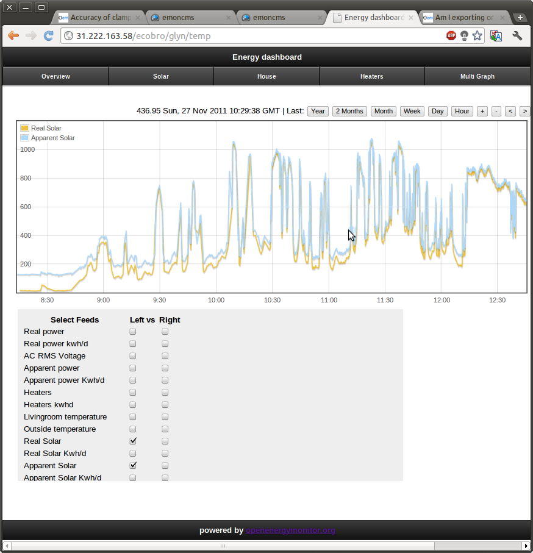

I have read (I think) everything written up on this site regarding the method to calculate the export current. (I have a standard installation with inverters connected into the main consumer unit on a sparate MCB.) Hence my meter tails have current flow equating to both import and export current. To date (prior to emon) I use an Owl meter with a CT on the meter tail and subtract the actual meter reading (corrected by 7.75% as the Owl overeads by this amount.) to find the export power.
I am really curious to understand better how this design (option 2) using the current sensing CT on the meter tail and the voltage measurement (via an ac/ac power adapter) calculates the current flow direction? I am puzzled by this and don't find the descriptions very illuminating? Can somebody explain please? Is it to do with phase differences?
If I understand this question I can then work out my best way to install monitors. I have questions like: -
I want to control a variable load to consume excess power. I intend to drive this to zero meter tail current when generation exceeds consumption. I will need a near instantaneous calculation to do this. How long does the design accumulate current readings for before transmission?
I would like to install my EmonTX near the inverter and place the AC/AC adapter local to the inverter as well. This is quite remote from the main meter. Will this have an effect on the result?
Many thanks
Steve
Re: Am I exporting or importing?
You dont need an AC AC adapter for the inverter. All solar inverters have a one stable fixed, predefined voltage. usually it is 10v higher than your grid voltage. What kind of inverter do you have?
Re: Am I exporting or importing?
Hi Steve,
What you have described is exactly how my PV installation is setup. The Owl monitor will be over reading since it's only monitoring apparent power. The apparent power will be greater than the real power (what your utility meter will be reading) when the power factor is less than 1. The power factor is not always constant. We found that the power factor can get quite low when the power output is below around 15% of array peak capacity. We have observed this to be worse with transformer inverters (non-TL). See the screen grab below from my home monitoring system (it's a 2.9Kw system with a Fronious 3000+ inverter):

The difference at low powers is not as great with a TL inverter. See here for a live example of such a system: http://vis.openenergymonitor.org/pages/solar.php. We believe the low power factors caused by solar PV inverters could be caused by non-liner current waveforms from the inverters (like from a SMPS) rather than just the current being out of phase with the voltage. We plan to do some more testing on this soon. There is an interesting paper which explains this in more details linked to at the bottom of this page: http://openenergymonitor.org/emon/buildingblocks/ac-power-introduction
In order to be able to detect the polarity of the current (which way it's flowing), we needs a point of reference. This point of reference is provided by the AC voltage reading. When the current is negative the polarity of the current waveform is inverse to that of the voltage waveform, the waveforms are still in phase (assuming a PF of 1).
The emonTx can be set to take a reading (by sampling over 1480 wavelengths) as often as you like. The default is every 10's,.
As Amin mentioned above the AC-AC adapter is not measuring the voltage of the inverter it's measuring the AC RMS grid voltage at the point of your property, therefore it doesn't matter where it's located.
Best of luck with your system.
All the best,